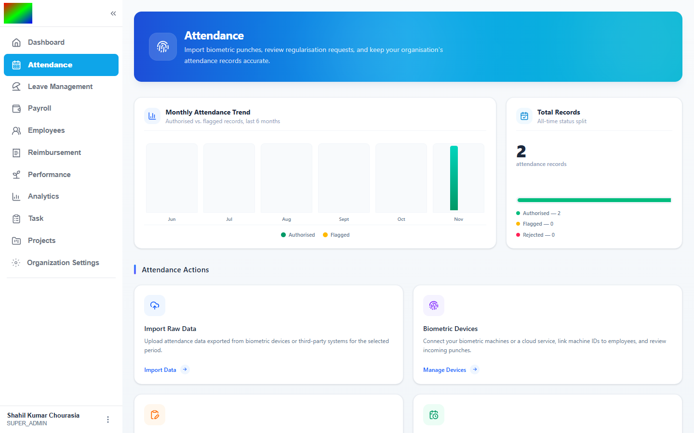
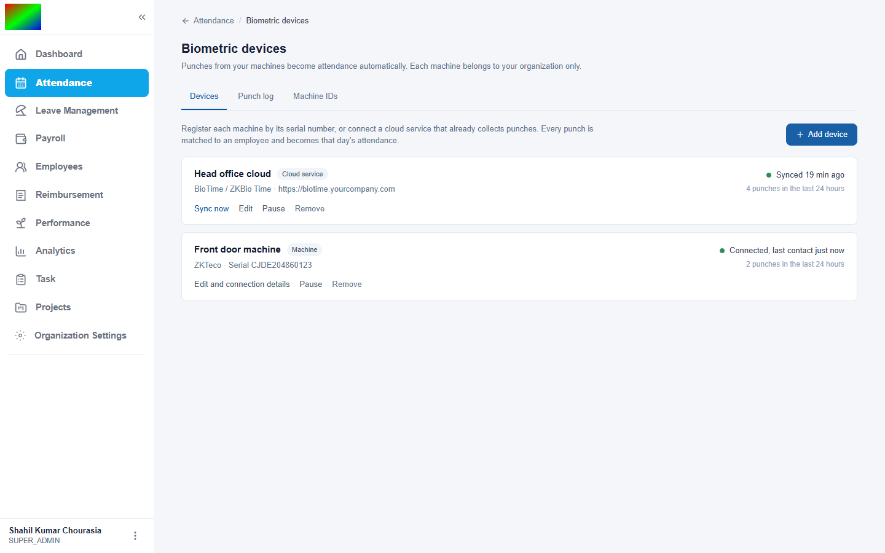
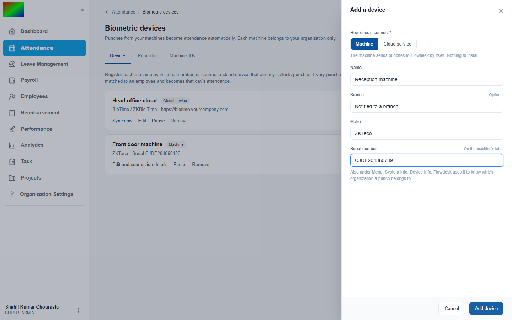
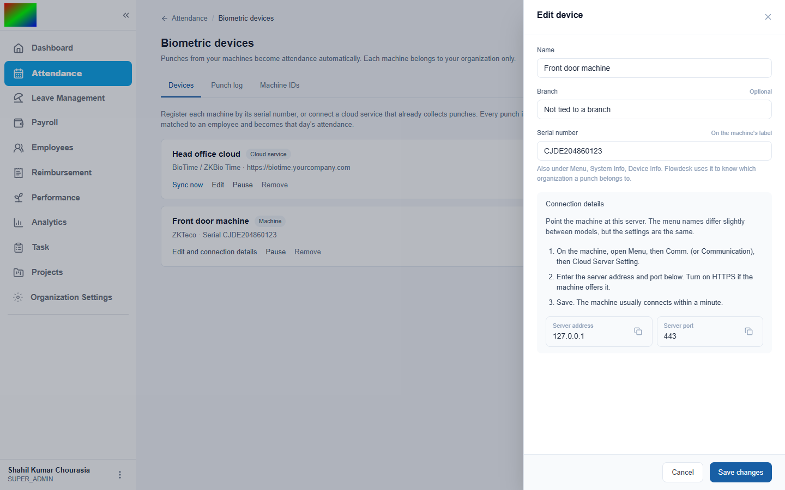
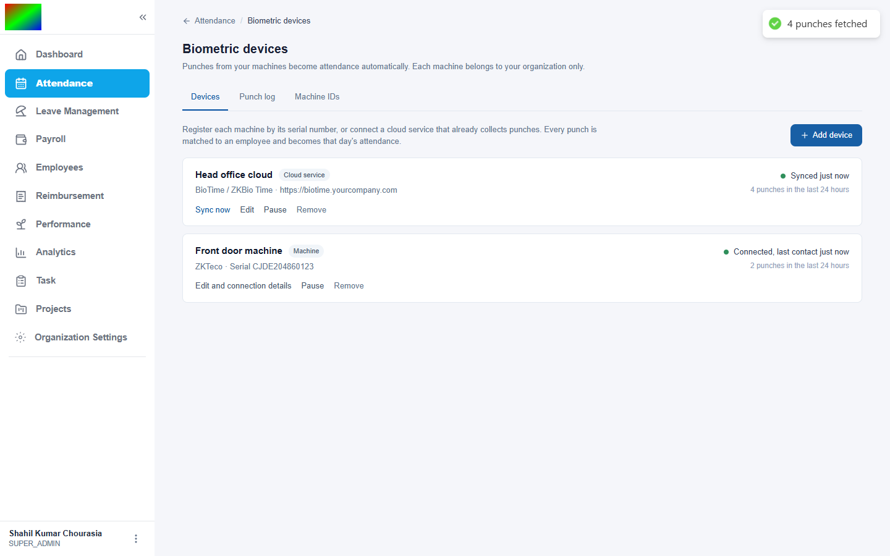
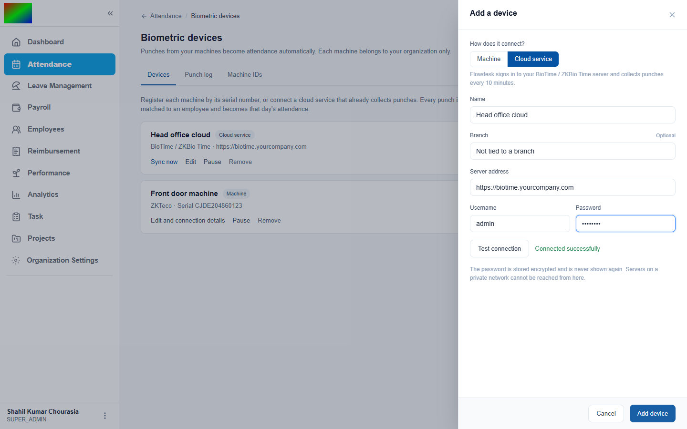
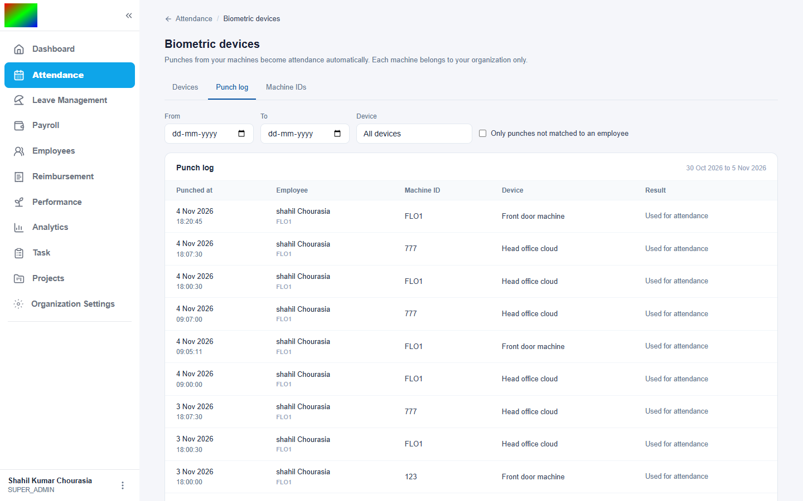
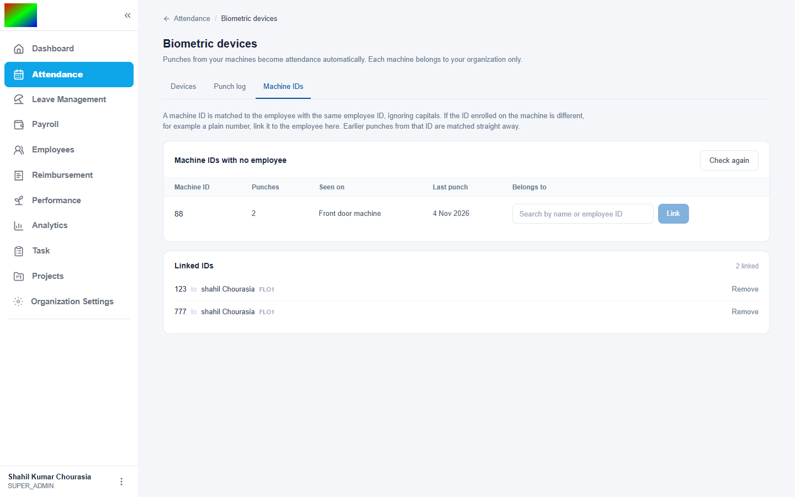
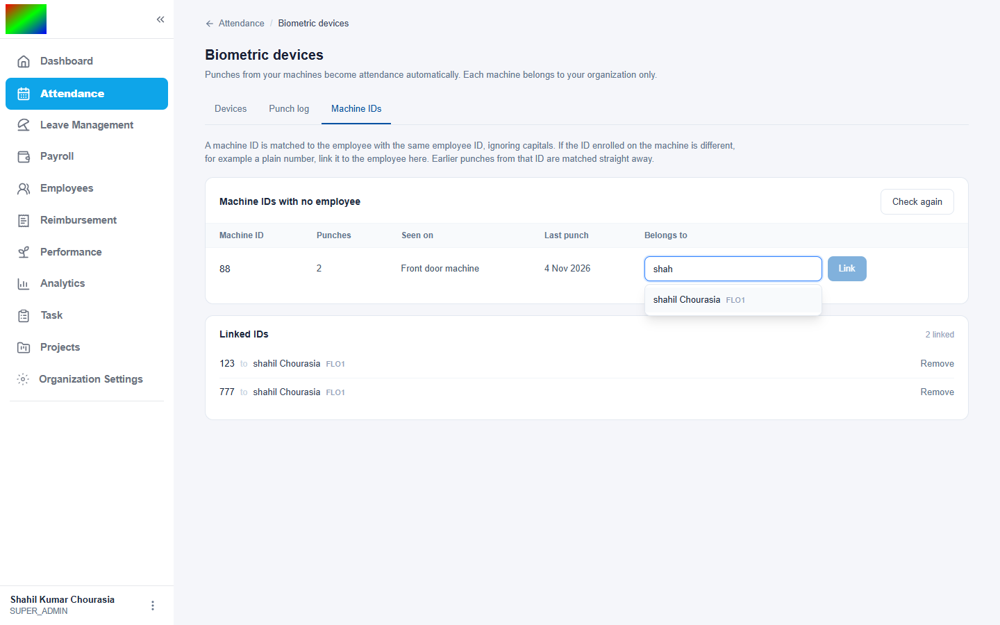

Each organization connects its own biometric machines or a cloud service, and punches turn into attendance on their own. This page covers how to set it up, what to provide, and how the backend works.
An organization registers devices, and each device belongs to that organization only. Flowdesk keeps every punch, matches it to an employee, and builds the employee's attendance for the day.
Option A
ZKTeco, eSSL, Realtime, Mantra and other ADMS machines send punches to Flowdesk by themselves. Nothing is installed at the office.
Option B
For machines that already report to BioTime / ZKBio Time. Flowdesk signs in and collects punches every 10 minutes.
| Detail | Where to find it | Example |
|---|---|---|
| Device name | Your own label, shown in the device list and punch log. | Front door machine |
| Make | Printed on the machine. | ZKTeco |
| Serial number | Sticker on the machine, or Menu, System Info, Device Info. Unique across all of Flowdesk. | CJDE204860123 |
| Branch (optional) | The office the machine is in. | Pune office |
| Server address and port | Shown by Flowdesk after the device is added. Typed into the machine. | api.yourcompany.com, 443 |
| Machine IDs | The ID each person was enrolled with on the machine. | FLO1 or 123 |
| Detail | Where to find it | Example |
|---|---|---|
| Name | Your own label. | Head office cloud |
| Server address | The web address used to open BioTime, starting with https://. | https://biotime.yourcompany.com |
| Username | A BioTime account that can view attendance transactions. | admin |
| Password | That account's password. Stored encrypted and never shown again. | - |
Go to Attendance and click the Biometric Devices card.

On the Devices tab click Add device, choose Machine, then enter the name, make and serial number.



The device should read Connected, last contact just now. A machine that has not contacted Flowdesk for 15 minutes shows No contact since.

On its first connection the machine uploads everything stored on it. Flowdesk imports all of it, except for days that already have a regularisation request.
Click Add device, choose Cloud service, fill in the name, address, username and password, then click Test connection before saving.

| Message | What to do |
|---|---|
| Connected successfully | Click Add device. |
| The username or password was not accepted | Check the login in BioTime. |
| That address could not be found | Check the spelling of the address. |
| The server refused the connection | Check the address and that the server is running. |
| That address points to a private network | The server must be reachable from the internet. |
The first sync reads the last 7 days. After that it runs every 10 minutes and re-reads the previous day, so punches that machines upload late are not missed. Sync now runs it on demand.
Each punch shows the time in the organization's timezone, the employee, the machine ID, the device and the result. Filters cover dates, device, and punches not matched to an employee.

IDs with no matching employee wait on the Machine IDs tab. Search for the person, pick them and click Link. Earlier punches with that ID are matched straight away and their days are rebuilt.


The day shows the first punch as punch-in, the last as punch-out, the hours worked, and the source Biometric.
| Machine sends | Link | Employee IDs | Result |
|---|---|---|---|
| FLO1 | none | FLO1 | Matched to FLO1 |
| flo1 | none | FLO1 | Matched, capitals ignored |
| 123 | 123 to FLO1 | FLO1 | Matched through the link |
| 88 | none | no employee 88 | Not matched. Waits for HR. |
The raw punch is the source of truth, and attendance is derived from it. A machine can resend, send late, or send before anyone has told the system who an ID belongs to, so every punch is stored first and the day is recomputed from the stored punches each time.
POST /iclock/cdata?table=ATTLOG. Cloud: a job every 10 minutes, one-day windows.| Table | What it holds |
|---|---|
| biometric_devices | One row per machine or cloud account, always with an organization. Machine serials are unique across all tenants. Cloud passwords are encrypted. |
| biometric_punches | Every punch as received, with the matched employee or null, and a note on how it was used. |
| biometric_user_maps | HR's links from a machine ID to an employee, unique per organization. |
The filter emp_status <> 'separate' is false for NULL, and new employees have no status. The employee dropdown was empty and headcount in the analytics read zero.
Nine occurrences became IS DISTINCT FROM 'separate'.
The employee picker showed only a sliver of its list, because the table sits in a horizontally scrolling container that crops overflow. Screenshots taken for this page exposed it.
Not fixed yet. The list needs fixed positioning from the input's on-screen box.
The shared error helper replaced any 400 message longer than 50 characters with "Invalid request", hiding why a cloud address was refused.
Not fixed yet. A small helper that shows the server's own message for client and gateway errors would fix it, leaving the shared helper alone.
Machines post tab-separated text, often labelled as form data. The global form parser consumed it and no punches were read.
The machine router is mounted before the parsers and reads a raw text body.
Tested end to end with a simulated machine and a mock BioTime server, not with real hardware. The BioTime adapter follows the vendor's documented API and has not met a live server. Night shifts are split by calendar day, and status uses the existing eight-hour rule, not each person's shift.